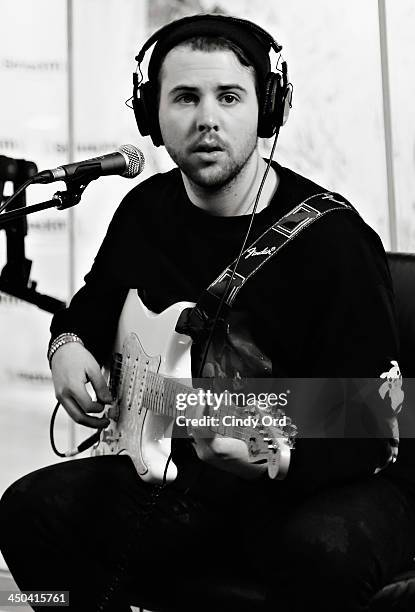
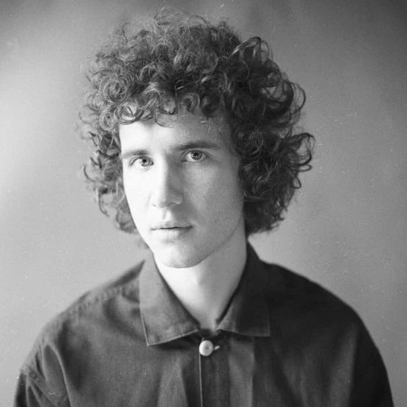
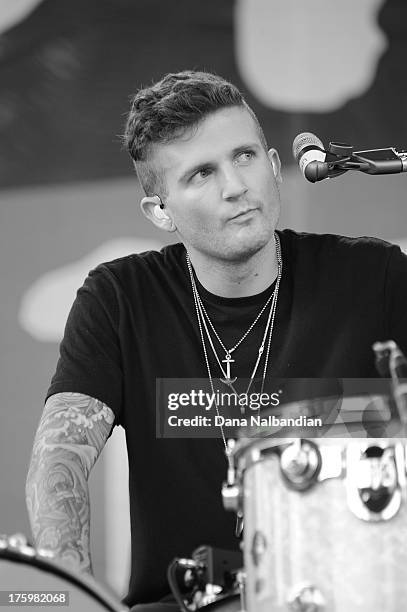
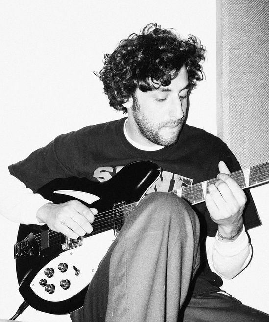

Integrantes do The Neighbourhood
Sobre
Álbuns
Integrantes
Integrantes Atuais
Jesse Rutherford
Nome Completo:
Jesse James Rutherford
Data de Nascimento:
21 de agosto de 1991 (33 anos)
Onde Nasceu:
Newbury Park, Califórnia, EUA
Função na Banda:
Vocalista

Jeremy Freedman
Nome Completo:
Jeremiah Allen Freedman
Data de Nascimento:
02 de julho de 1992 (32 anos)
Onde Nasceu:
Simi Valley, Califórnia
Função na Banda:
Guitarrista
Zach Abels
Nome Completo:
Zachary Shane Abels
Data de Nascimento:
03 de julho de 1992 (32 anos)
Onde Nasceu:
Simi Valley, Califórnia, EUA
Função na Banda:
Guitarrista

Mikey Margott
Nome Completo:
Michael Blake Margott
Data de Nascimento:
01 de outubro de 1993 (31 anos)
Onde Nasceu:
Califórnia
Função na Banda:
Baixista
Ex-Integrantes

Bryan
Nome Completo:
Bryan Sammis
Data de Nascimento:
11 de julho de 1990 (34 anos)
Onde Nasceu:
Oak Park, Califórnia
Função na Banda:
Baterista

Brandon Fried
Nome Completo:
Brandon Alexander Fried
Data de Nascimento:
06 de novembro de 1990 (33 anos)
Onde Nasceu:
Califórnia
Função na Banda:
Baterista